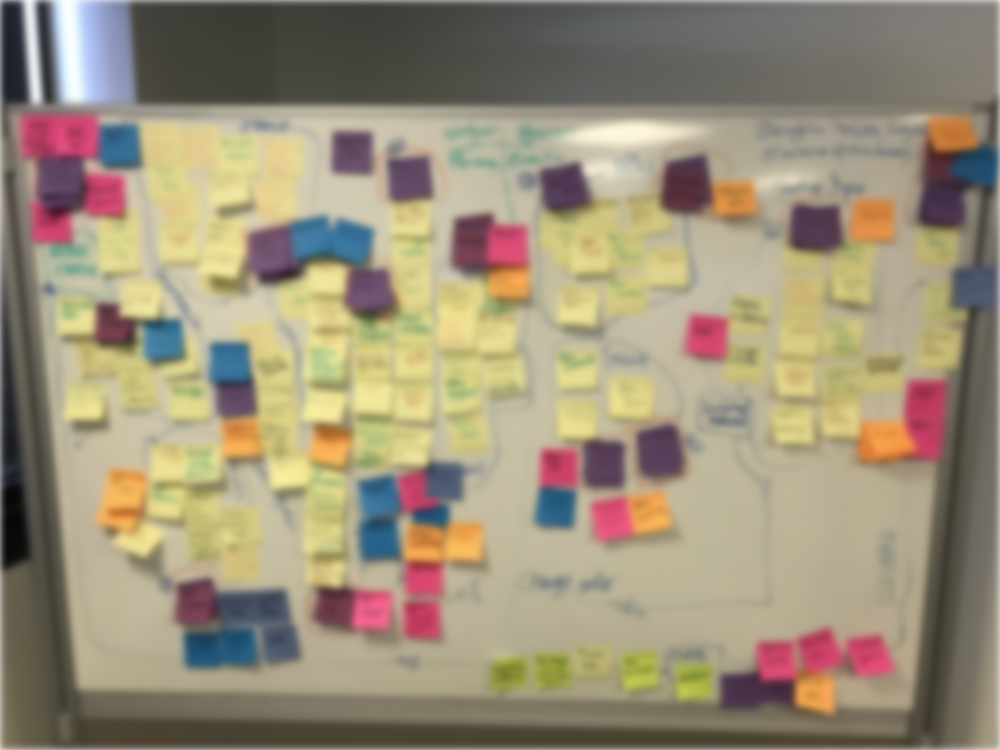
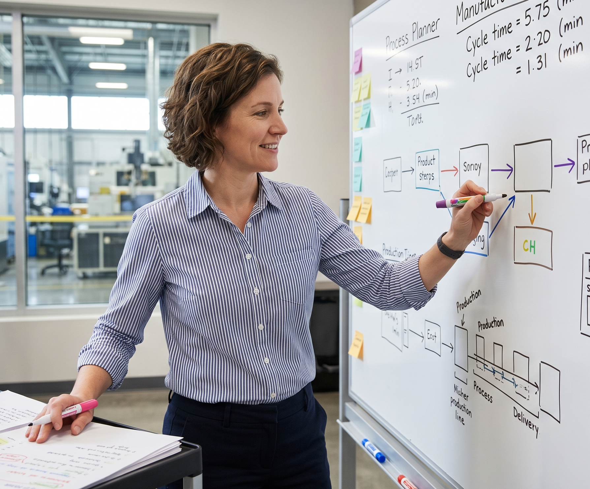
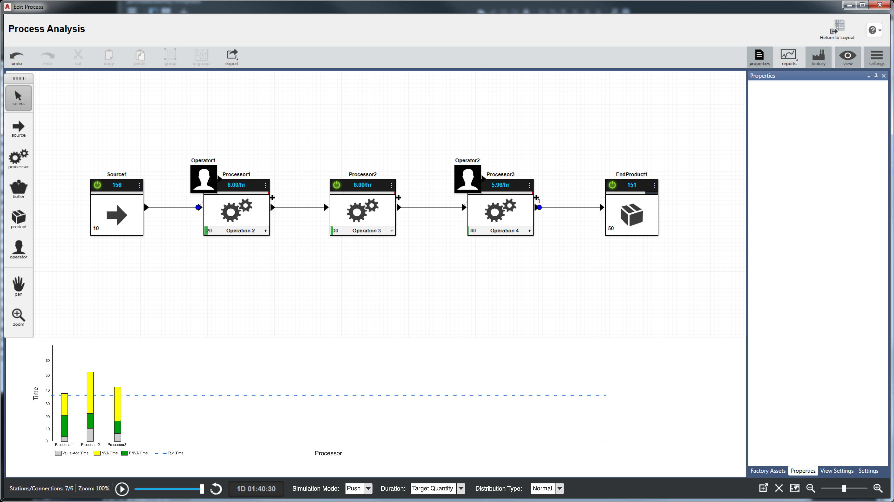
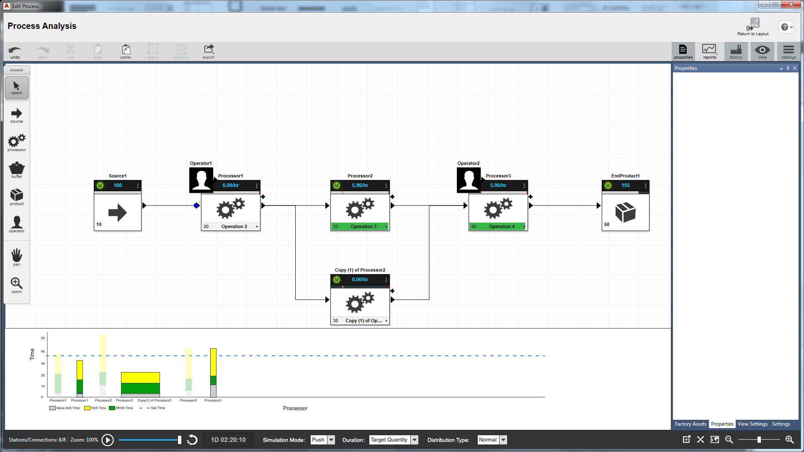
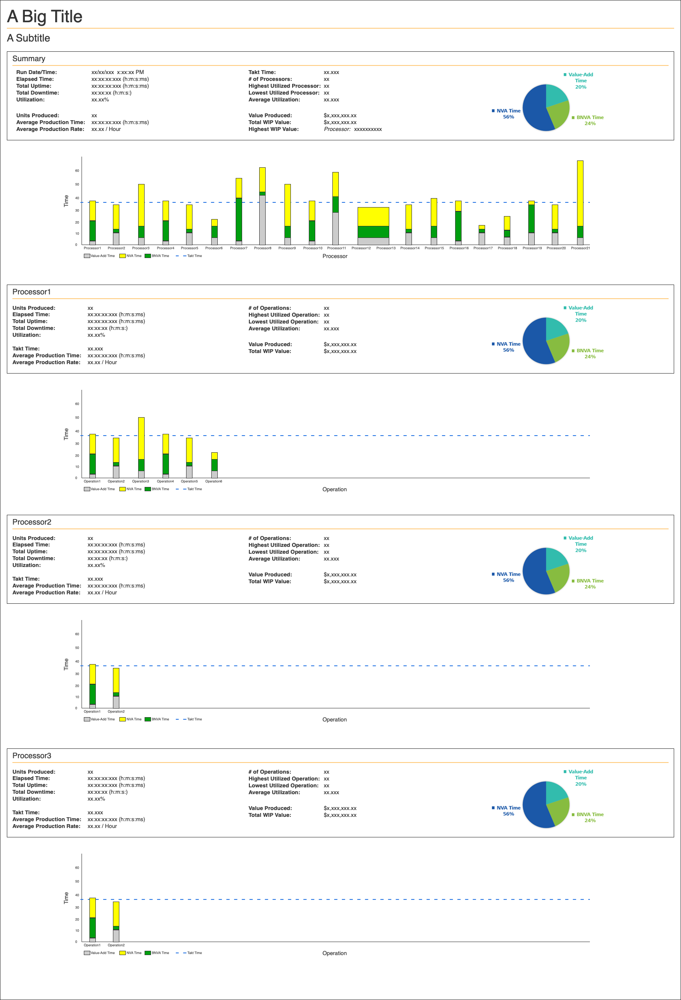

The Problem
Users need reports of the simulations to share with stakeholders, but static reports would not provide real-time insights during the design process. If they wanted to make changes and see how those impacted the simulation, they would have to generate the report, adjust their design, and re-run the simulation to see the impact of those changes. This process wastes time and forces users to switch back and forth between the static report and the design, possibly many times.
My Role & Approach
As the lead designer, I led the team in an effort to identify how we might improve the user experience. With a mix of internal subject matter experts and customers, we mapped out the process, identified the details needed in reports, and brainstormed ideas of how we might deliver more that simple static reports. That solution was to integrate real-time simulation monitoring into the design process. This allowed users to adjust their designs while the simulation was running and immediately see the impact. Below is an image of our brainstorming session as well as a persona that represents our target user.


Sarah, 42
Sr. Process Planner
Industrial Manufacturing
"I need to see the line move, not just read about it in a cell."
The Spreadsheet Struggle
Sarah represents our core user transitioning from manual planning. She currently manages entire factory layouts using disconnected spreadsheets, making it impossible to see real-time friction or predict how one station's delay affects the entire global ecosystem.
Core Motivations
- + Reducing simulation setup time.
- + Automating cycle time reporting.
- + Visualizing 'Blocked' vs 'Idle' time.
Current Friction
- × Static data hides line bottlenecks.
- × Manual entry leads to human error.
- × No real-time feedback loop.
Execution
As we built out the static reports, we explored what a real-time simulation dashboard could look like.

Early exploration of the real-time simulation dashboard.

Early exploration of the real-time simulation dashboard.

The reporting output showing actionable insights.
Real-time Simulation: Video credit to Acad Systems Sdn Bhd
We enabled users to adjust their designs while the simulation was running which allowed them to immediately see the impact. This coupled with our static reporting capabilities provided a comprehensive view of the simulation results.
Cycle Time Report
Identify potential issues or areas of improvement in the process.
Line Efficiency Report
Get a detailed view of the models line efficiency.
Monitor Simulation
Monitor the performance of the process design.
Result & Reflection
We helped process planners move away from spredsheets towards a more dynamic, real-time approach to process analysis.
Success Metric
40% Efficiency Gain